小组成员：大数据172赵文杰，大数据172陈淑贤，大数据174马永婵
指导老师：刘兰华
（一）项目背景：马上就到电影的春节档，最近吴京成了电影票房的保证，那么目前吴京
在国内演员中位列几何呢？可以试试爬取猫眼电影数据，然后基于python数据分析的方式，
分析中国演员排名情况。爬取到的数据是20110101至20191019年在中国上映,并且有用户评
分和票房的影片，总共是2923部。
（二）首先进行数据处理，提取有效数据用于分析，流程及结果如下：
1. 由于此次只分析中国演员，所以需要剔除国外影片，并将每部影片的
演员列表从字段“导演/演员/编剧”中分割出来：
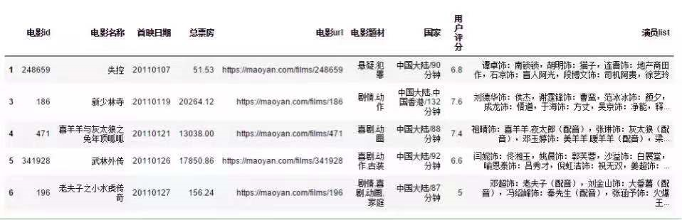
2.考虑到配音类型的影片是看不到演员本人的，所以需要剔除配音类型影片。 再将演员列表从行转置列，使得每行电影名称和演员是一一对应的。由于猫眼电影已经按照演 员的出场频率进行排序，所以每部影片取前四名演员，作为影片主演，其中多明星合拍的影片， 如《我和我的祖国》就改为取前十名：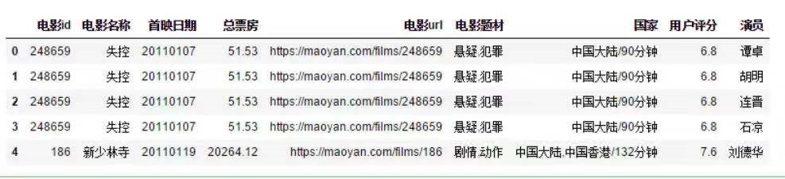
3.然后，拆分每部电影的电影题材类型并进行转置，再汇总每个演员出演过的 电影题材，排序后取前三个类型，作为演员的拿手题材：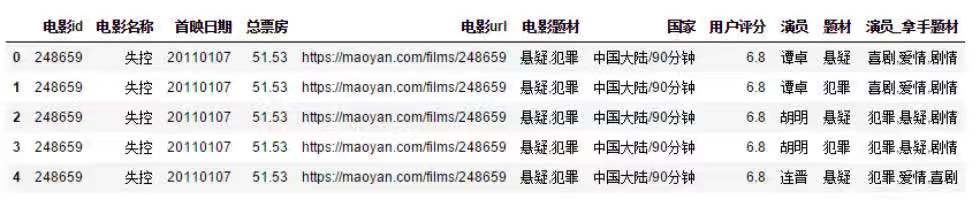
（三）现在拿到的数据还不好直接进行分析，所以我们接下来对数据进行简单地优化：1.首先目前只有“演员总票房”和“影片平均评分”两个字段，可用作描述一个演员综合能力，所以需要衍生一些字段： 电影数量：统计演员主演过的影片数量； 大于10亿票房影片数量：汇总单部影片票房大于10亿的数量； 大于10亿票房影片计分：按照不同票房区间赋予分值，再汇总； 由于部分演员只出演过一部影片， 属于单样本，若不剔除，会影响 各项指标的数值分布，数据现在变成了如下所示：
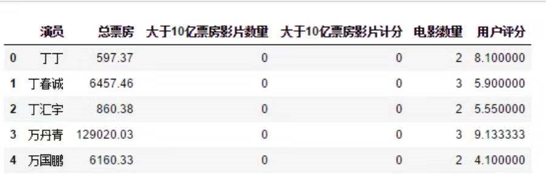
2.由于数值字段之间的量纲不同，需要进行标准化处理后才可以进行比较。 “演员总票房”的高低是衡量一个演员能力的重要因素，这里笔者将“大于10亿票房影片数量” 和“大于10亿票房影片计分”也作为两点重要因素，而“影片平均评分”和“电影数量”作为 次要因素，最终标准化处理后的计算公式： 总分=演员总票房+大于10亿票房影片数量+大于10亿票房影片计分+0.5*影片平均评分+0.5*电影数量 进行计算之后的数据如下：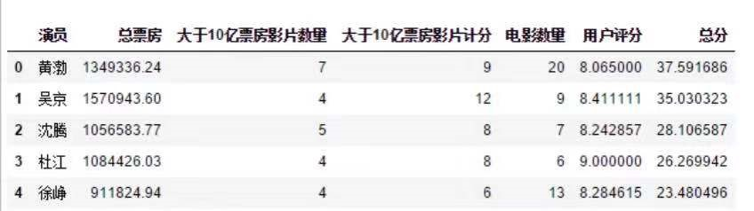
（四）最后就是重头戏了，将电影数据进行分析之后可视化，具体流程及结果如下：1.先从整体上对电影的概况进行描述分析，才能更好地理解演员各项指标高低的优劣程度。 首先，2011年至今，国内上映的影片总共是2129部，其中10亿票房以上的影片只有39部，占了总体的0.02%， 结果如图所示：
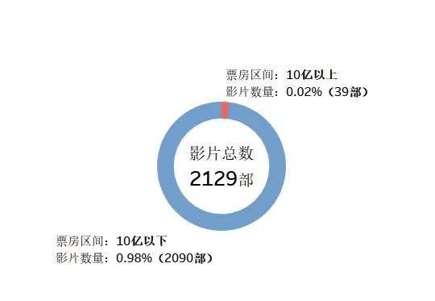
2.可以将数据细化展示进行对比，如下图所示，可以看出目前国内影片最高票房已经到50-60亿 之间，只有一部。40-50亿只有两部，大部分10亿以上的票房都集中在10-20亿之间。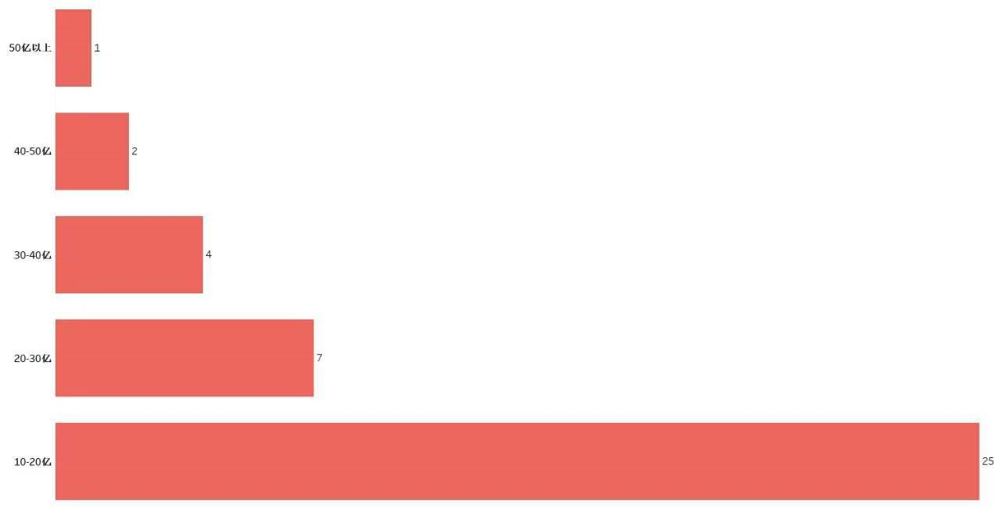
3.接下来，分析电影题材，结果如下图，可以看出整体上，剧情、喜剧和爱情类型的电影题 材拍得最多，而灾难类型的电影最少。从热门和冷门的电影题材中，很好地诠释了“报喜不报忧”这句成语， 毕竟每个走进电影院的人都希望能轻松愉快地度过这两个小时。所以10亿以上票房的影片中，喜剧类型的电 影题材反而排在了第一位。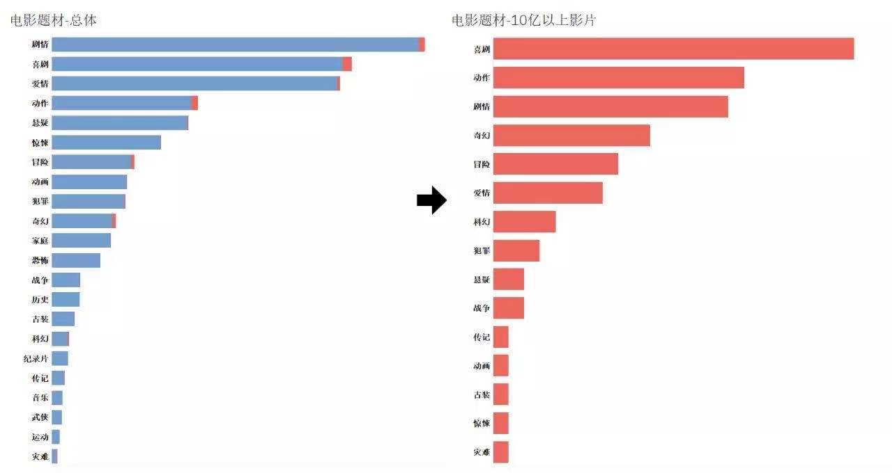
4.然后我们可以看下哪一年的电影票房收益最好，如下图，从电影上映时间轴中可以看出， 整体上，17年之前上映的影片逐年增加，但在17年之后有所下降。而10亿以上票房的影片每年都在增加， 侧面说明近几年国内电影影片质量有所上升。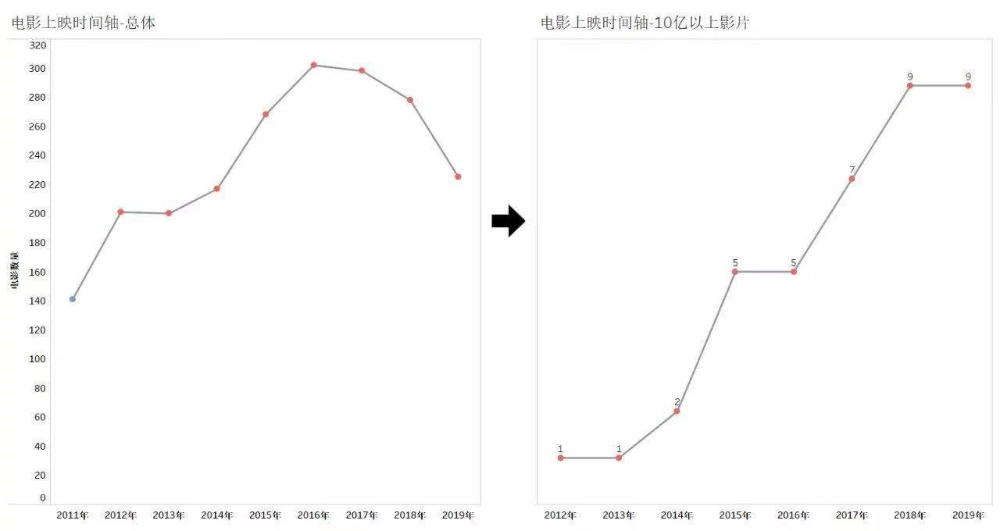
5.分析告一段落，我们进行一下电影数据的总结，将全部图表放到同一个仪表板中， 可以很方便地看到10亿以上票房的影片分布情况，以及具体的影片名称，如下图。其中，2012年的 《人在囧途之泰囧》是国内第一部10亿+票房影片，2015年的《捉妖记》是首部20亿+票房影片， 2016年的《美人鱼》是首部30亿+票影片，2017年的《战狼2》是首部50亿+票房影片，而2019年的 《流浪地球》和《哪吒之魔童降世》是唯一两部40亿+票房影片。从这个时间轴可以看出，自2015年起， 每年最高票房都比前年多出10亿以上。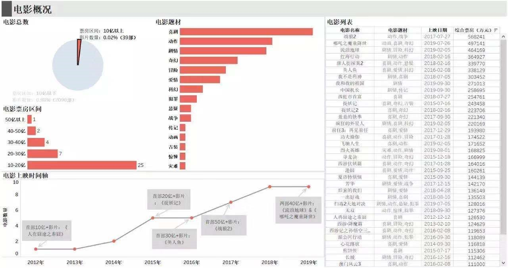
6.接下来我们就可以从演员角度进行分析啦，根据上述的计算公式得到总分TOP10的名单， 前三名分别是黄渤、吴京和沈腾。这也难怪现在大家会对吴京出演的影片信心那么高，如下图：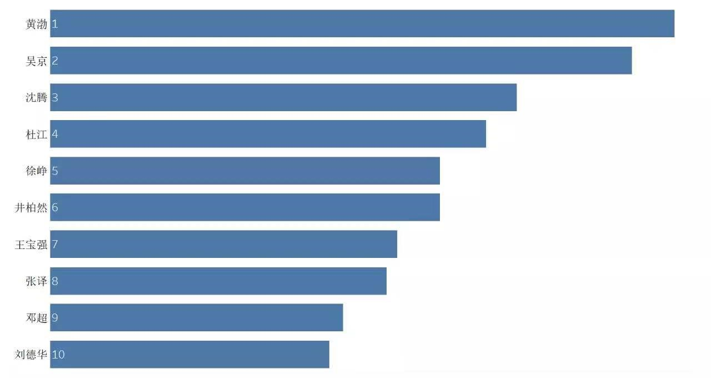
7.然后我们汇总每个演员主演的电影票房后，得到总票房TOP10的名单，如下图，目前 国内百亿票房均是男演员，分别是吴京、黄渤、杜江和沈腾。其中吴京已经是150亿票房冠军，比较意 想不到的是杜江也上了百亿榜，虽然他参演的几部热门影片，如《红海行动》、《我和我的祖国》和 《中国机长》都不是第一主演，但这几部都是10亿+票房影片，是不是能说明他存在某些旺票房特质呢？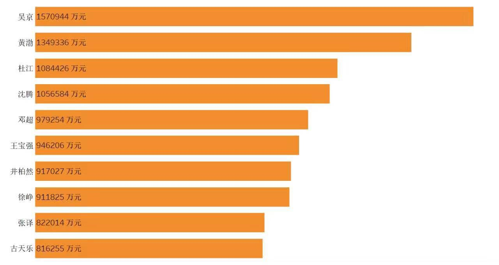
8.再来看看演员勤劳度，从演员参演电影数量TOP10的分布情况，可以看到前几名都是香港演员， 其中古天乐在7年内主演了36部影片，位列榜首。除了影片数量位列榜首外，其实平平无奇的古仔已经默默地捐 赠了100多所学校，这也许就是他当上电影“劳模”的原因吧。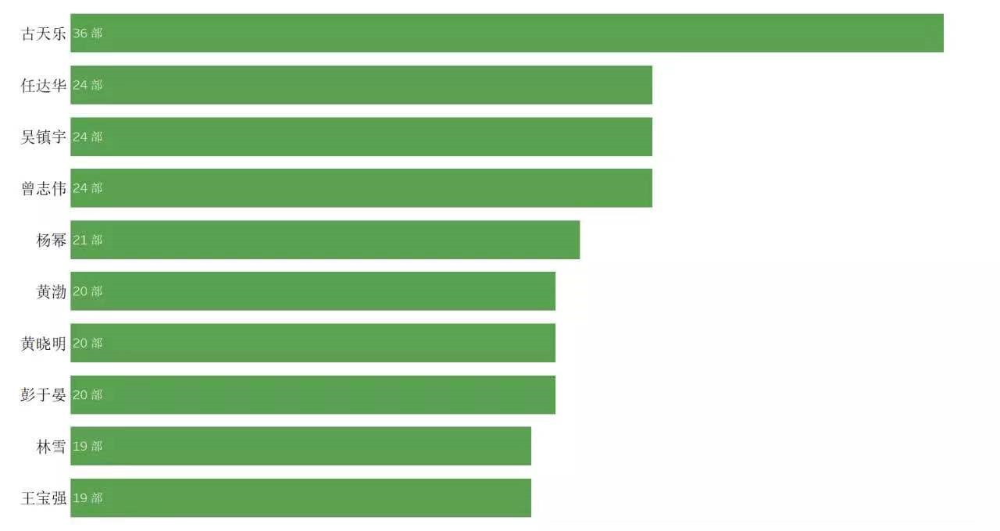
9.最后，我们也进行一下演员数据的总结，将上述三张图表和详细列表放到同个仪表板中，就可 以清楚地知道，能够位列前茅的演员都是主演过多部影片，并且拥有多部10亿+票房影片。其中有一个比较有趣 的地方是王宝强的影片平均评分是6.3，但他仍然能够排到第七名，原因是他主演过几部评分在5分以下的影片， 才导致他平均评分会这么低。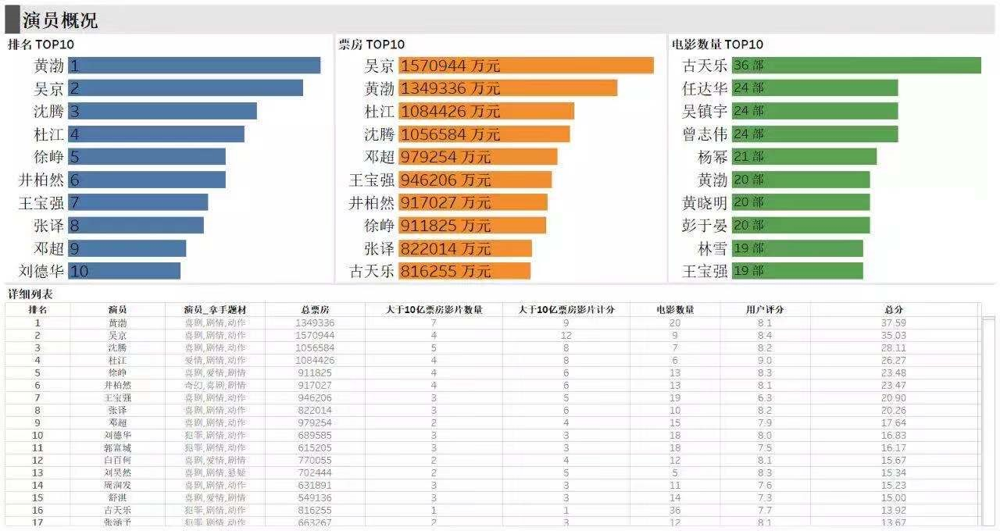